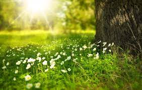
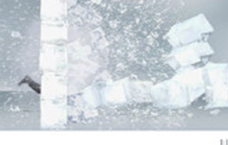
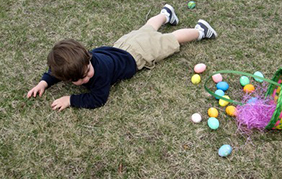
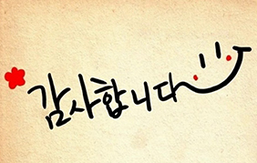
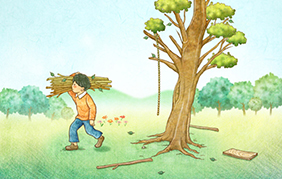

LookWisely
지혜롭게 세상을 바라보다
2022 Daejeon Copyright© All Reserved.


출발하기 위해
위대해질 필요는 없지만
출발부터 해야한다
close

또 다른 목표를 세우거나
새로운 꿈을 꾸기에
절대 늦은 나이란 없다
close


앞서가는 방법의 비밀은
시작하는 것이다
close

게으름과 여유는
명백히 구분되어야 한다.
여유는 능동적 선태에 의한 것이고
게으름은 선택을 피하기 때문에
찾아오는 것이다
close

가치있는 목표를 향한
움직임을 개시하는 순간
당신의 성공은 시작된다
close

세상의 중요한 업적 중 대부분은,
희망이 보이지 않는 상황에서도
끊임없이 도전한 사람들이 이룬 것이다
close


장애물을 만났다고 반드시 멈춰야하는 것은 아니다
벽에 부딪힌다면 돌아서서 포기하지 말라
어떻게 벽에 오를지, 벽을 뚫고 나갈 수 있을지,
또는 돌아갈 방법은 없는지 생각하라
close

인생에서 실패한 사람들의 대부분은
성공이 눈앞에 왔는데도 그것을 모르고
포기한 사람들이다
close

꿈을 품고 뭔가 할 수 있다면
그것을 시작하라
새로운 일을 시작하는 용기 속에
당신의 천재성과 능력과 기적이 모두 숨어있다
close


할 수 없을 것 같은 일을 하라
실패하라 그리고 다시 도전하.
이번에는 더 잘 해보라 넘어져 본적이 없는 사람은
단지 위험을 감수해 본적 없는 사람일 뿐이다.
이제 여러분 차례이다
이 순간을 자신의 것으로 만들라
close


감사는 정중함의
가장 아름다운 표현이다
close


친절하게 행동하라
그러나
감사는 절대로 기대하지 말.
close

남에게 베푼 이익을 기억하지 말라
남에게 받은 은혜를 잊지 말라
close

감사할 줄 모르는 자들을
벌하는 법을 따로 세우지 않는 까닭은
감사할 줄 모르는 자들은
스스로가 고통을 초대하기 때문이다
close

사람이 얼마나 행복한 가는
그의 감사의 깊이에 달려있다
close

미숙한 사랑은
'당신이 필요해서 사랑한다'고 하지만
성숙한 사랑은
'사랑하니까 당신이 필요하다'고 한다
close

자유를 사랑하는 것은
타인을 사랑하는 것이다
권력을 사랑하는 것은
자신을 사랑하는 것이다
close

겁쟁이는 사랑을 드러낼 능력이 없다
사랑은 용기 있는 자의 특권이다
close

사랑에 의한 상처는
더 많이 사랑함으로써 치유된다
close

사랑은 결정이 아니다
사랑은 감정이다
누구를 사랑할지 결정할 수 있다면
훨씬 더 간단하겠지만
마법처럼 느껴지지는 않을 것이다
close